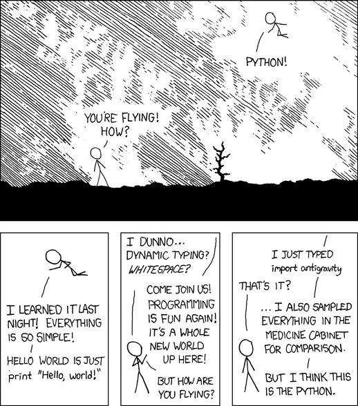

How I can help.
A first look
"Atomap is a Python library for analysing atomic resolution scanning transmission electron microscopy images. It relies in fitting 2-D Gaussian functions to every atomic column in an image, and automatically find all major symmetry axes."
-Quote from their official website
Let's take a look at it!
The full procedure is explained in the article Atomap: a new software tool for the automated analysis of atomic resolution images using two-dimensional Gaussian fitting.
"aixACCT Systems specializes in piezoelectric materials. As a technological leader and experienced specialist, we continuously develop characterization solutions so that you can achieve your goals quickly and reliably. [...] We rethink technologies and constantly adapt them to your needs."
-Quote from their official website
Let's take a look at it!
There is a more
specific brochure
Mathieu was kind enough to give a 101 intro class
Code that Mathieu sent me afterwards
My job is to streamline this.
- Change over to Python
- Allows for much broader functionalities
- Why?
- Python has a huge community of developers and countless libraries for all possible applications
- Becomes a livable maintainable project
Power of Python
My job is to streamline this.
- Expand functionalities
- Increase customizability for researchers
- Make it more inviting and transparent
Final goal: Reduce the amount of programs, windows, tables etc used in the workflow
My job is also to pass the mantle
Teach the secrets of our trade - programming
3. Probostat
"The grand finale"
Let's say...
So what does that really mean

I got a chance to explore the lab with Maja
First time I got a chance to see an actual research lab in person
We were discussing oxygen as an inpurity, it's relationship to changes in temperature
Oxygen conc. increasing around cca 150°C... waiting for the peak to subside to former values
Oxygen conc. increasing around cca 600°C... sample absorbing it? Oxidizing?
The point is - I need to apply experience
from previous two subprojects to tackle this
and also at least some staž(manhours) in the lab.
4. AI/ML Computer vision model
for drawing out borders of grains in a polycrystaline structure
What do I need to make this happen?
Training data : pairs of inputs and outputsInput: photos taken from electron microscopes
Output: drawn lines of borders (also as a picture)
An AI model : neural network?
which one?
"A mostly complete chart of Neural Networks" by Fjodor van Veen